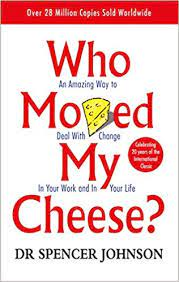

I am from Hyderabad India.I am interested in Soccer and coding.I like to explore latest technologies.
Who Moved My Cheese? is a parable about change that takes place in a Maze where four characters look for “Cheese”—cheese being a metaphor for what we want in life.The four imaginary characters depicted in the story—the mice: “Sniff” and “Scurry,” and the Littlepeople: “Hem” and “Haw”—are intended to represent the simple and the complex parts of ourselves. I like this book as it cheers me and motivates me.It is a very short book and gives a new prospective of life.
